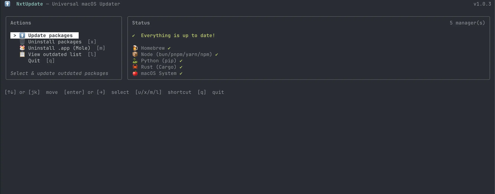

NxtUpdate
macOSUn outil en ligne de commande qui détecte tous les gestionnaires de paquets installés sur un Mac et les met à jour en une seule fois, avec une interface terminal interactive ou de simples commandes.

Le projet
Sur un Mac de développeur, les mises à jour sont éparpillées entre Homebrew, npm, pip, Cargo et les mises à jour système. NxtUpdate les détecte automatiquement et les regroupe dans une seule commande : nxtupdate.
Aucune configuration n'est nécessaire. On peut tout mettre à jour d'un coup, choisir un seul gestionnaire, ou sélectionner les paquets un par un.
Fonctionnalités
- Interface terminal interactive : parcourir, sélectionner et mettre à jour les paquets au clavier.
- Détection automatique : repère chaque gestionnaire de paquets installé.
- Mises à jour sélectives : choisir les gestionnaires ou les paquets à mettre à jour.
- Mode simulation :
--dry-runaffiche ce qui changerait sans rien toucher. - Désinstallation : supprimer des paquets de n'importe quel gestionnaire depuis l'interface.
- Mises à jour système : inclut
softwareupdatede macOS, avec prise en charge de sudo.
Gestionnaires pris en charge
Homebrew (formules et casks), npm, pnpm, yarn et bun, pip et pip3 (les environnements virtuels sont ignorés), Cargo via cargo-install-update, et softwareupdate pour macOS.
Installation
NxtUpdate fonctionne uniquement sur macOS et utilise Bun (version 1.0 ou plus) comme environnement d'exécution.
1. Installer Bun (si besoin)
curl -fsSL https://bun.sh/install | bash
2. Installer NxtUpdate
npm install -g nxtupdate
bun add -g nxtupdate
3. Lancer
nxtupdate